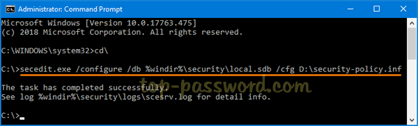

Export and Import Local Security Policy in Windows 10
https://www.top-password.com/blog/export-and-import-local-security-policy-in-windows/
Method 1: Export and Import Local Security Policy with GUI
The Local Security Policy Editor comes with the import / export feature, making it much easier to migrate or replicate the same local security policy settings across multiple computers.
Export:
-
Press the Windows key + R together. When the Run dialog box shows up, type secpol.msc into it and hit Enter to open the Local Security Policy Editor.
-
Right-click on Security Settings in the left-side pane, and you can then select Export policy from the context menu.
-
Browse to the location where you want to save the security settings file (.INF), give it a name and click on Save.
-
Open the .inf file with your text editor. As you can see, it contains all your local security policy, including your account lockout and password policy.
Import:
-
Open the Local Security Policy Editor as before, right-click on Security Settings in the left pane and this time choose Import policy.
-
Browse to the location where you saved the security settings file, select the INF file and click on Open.
-
Reboot your computer to apply the new local security policy.
Method 2: Export and Import Local Security Policy with Command Prompt
-
To export the local security policy settings to a file (for example, security-policy.inf), open the Command Prompt as administrator and type the following:
secedit.exe /export /cfg D:\security-policy.inf
-
When you need to import the local security policy settings from the .INF file, simply run this command:
secedit.exe /configure /db %windir%\security\local.sdb /cfg D:\security-policy.inf

This method is very useful especially when you’re using the Home edition of Windows which has no Local Security Policy Editor.